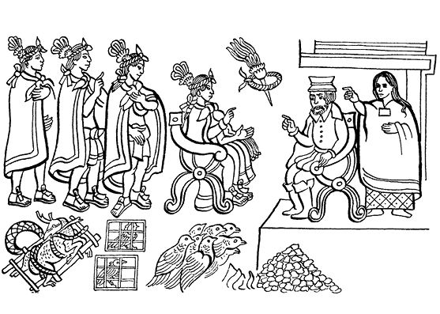
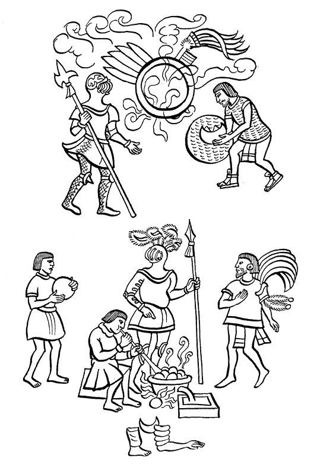
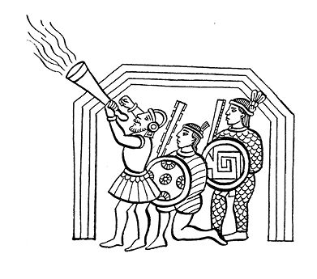

阿兹特克帝国驻华使馆
目录 |
第八章 西班牙人来到墨西哥-特诺奇蒂特兰
导 言
在特拉斯卡拉人的帮助下，西班牙人启程直奔墨西哥。下面转引萨阿贡实情提供者（编入《佛罗伦萨抄本》）提供的篇章，其叙述就从征服者各种军队的出现开始。 队伍从南方沿伊斯塔帕拉帕方向靠近墨西哥，到达索洛克，据堂费尔南多·德·阿尔瓦·伊斯特利尔索奇特尔说，这就是后来的圣安东，现在叫作圣安东尼奥修道院大道的地方。这里提到的这位伊斯特利尔索奇特尔在他的《第十三篇记述》中指出这一事件的具体日期是1519年11月8日。 关于蒙泰古祖玛和科尔特斯面对面交谈的情况，萨阿贡实情提供者有详细的记述，当时蒙泰古祖玛叹道： “不，这不是梦，我没迷糊，这些都不是我梦中看到的东西，我很清醒……我确实看到了你，我的眼睛看到了你的面容……” 下面的摘录记述了征服者如何在伟大都城安顿下来，以及他们为了攫取保存在宫殿中的黄金而策划的阴谋。 本章的最后简短叙述了伊斯特利尔索奇特尔在《第十三篇记述》中提到的“西班牙人的到来”，这一点和萨阿贡实情提供者的记述是一致的。
蒙泰古祖玛迎接科尔特斯
就这样，西班牙人到达了索洛克1。到了这里，他们就到达了终点和目的地。 此时，蒙泰古祖玛把自己装扮得整整齐齐前去迎接来者。其他主要官员、贵族、显要和骑士也都进行了精心的装扮。所有人倾城出动，前去迎接西班牙人。 大花盘里插满了精挑细选的鲜花：摆成盾形，放成心状，中间立着芬芳的花朵，黄色的香花尤为珍贵。编织的花环佩戴在胸前。 他们还戴着金项链、大颗念珠项链和针茅草项链。 在乌伊特斯兰2，蒙泰古祖玛出来迎接西班牙人，接着便向统帅科尔特斯馈赠礼品，也向那些其他前来征战的人赠送了礼品。他们把花环、花项链和长挂胸前的花串挂在来者的脖颈上，把花冠戴在他们的头上。 接着又把金项链挂在这些人的胸前，把其他赠品和欢迎礼物也都放在他们面前。
蒙泰古祖玛和科尔特斯的交谈
当把项链分发给每个人后，科尔特斯对蒙泰古祖玛说： “难道是你，你就是蒙泰古祖玛？” 蒙泰古祖玛答道： “不错，在下便是。” 说完他马上站起来迎向科尔特斯。他靠近科尔特斯，尽量低头鞠躬，口中说道： “我的大人，你辛苦了，你已经来到了这块土地，来到了这个城市：墨西哥。这里有你的宝座，你可以坐在你的宝座上。你的前人们为你保留了宝座，他们来的时间不长，然后又都离开了。 那些为你保留宝座的是以下几位国王：伊特斯克阿特辛、老蒙泰古祖玛特辛、阿萨亚卡特尔、迪索克和阿乌伊特索特尔3。他们在位管理墨西哥的时间都不长，就是为了等你来。众庶民都生活在他们的利剑和战袍的保护之下。 先王们一定会知晓他们后人的情况吧？  但愿他们中有人能够惊奇地看到我所见到的发生在我自己身上的事情。 我现在看到的是，我是一个废物，是诸位大人手下一个苟延残喘的人。 不，这不是梦，我没迷糊，这些都不是我梦中看到的东西，我很清醒……我确实看到了你，我的眼睛看到了你的面容…… 我焦灼不安已经有五天了，不，有十天了：我一直关注着那神秘的地方。 而你，大人，你来自云端，从雾霭中现身出来。 我想，这就是历代国王们，那些统治过这座城市的人讲述过的情形。 你将来到你的宝座上落座，你将来到你的土地上，你一定会来到这里…… 现在一切都变成了现实：你来了，你不辞辛劳地来到了这里。 你终于来了，你歇息吧，你去安排你的王宫吧，你去放松放松你的身体吧。 欢迎你们到这里，我的大人们！” 蒙泰古祖玛结束了他的长篇大论，科尔特斯都听到了。通过马林辛的翻译，他也都听明白了。 领会了蒙泰古祖玛这番话的意思，科尔特斯通过马林辛用他那怪异而野蛮的语言说道： “请相信我们吧，蒙泰古祖玛，您什么也不要怕。我们大家都很爱您。今天我们都很高兴。我们看到了您的尊容，听到了您的声音。很早以前我们就想见您了。” 他接着说： “我们都看到了，我们都来到了您墨西哥的家。这样您就能听到我们的话了，不用再惊恐了。” 接着，他拉着蒙泰古祖玛的手，一直陪伴他，还不时拍打他的手背以示亲热。
西班牙人和其他印第安头人的态度
西班牙人他们东看看西看看，看个不停；他们下马、上马、又下马地查个不停。 站在西班牙人身边的印第安人都是达官显贵： 第一个是特斯科科的国王卡卡马特辛； 第二个是特拉克潘的国王特特莱潘科特萨尔特辛； 第三个是特拉特洛尔克的国王伊特斯瓜乌特辛，即特拉克奇卡尔卡特尔； 第四个是蒙泰古祖玛在特拉特洛尔克的财政官德潘特莫科特辛。 他们依次站立，排成一行。 再下便是特诺奇蒂特兰的王子们： 阿特里萨卡特辛，即特拉卡特卡特尔4； 特佩欧阿特辛，即特拉克奇卡尔卡特尔； 克查拉斯达特辛，即蒂萨卡瓦卡特尔5； 托托马特辛； 埃卡特帕蒂特辛； 瓜比阿特辛。 后来，蒙泰古祖玛被拘捕的时候，上面这些人全都躲藏起来，背信弃义地把他抛弃了！……
西班牙人进入墨西哥—特诺奇蒂特兰
当西班牙人进入王宫以后，蒙泰古祖玛立即被软禁了起来。不仅是他，特拉特洛尔克的国王伊特斯瓜乌特辛也同样被监禁起来，其他人都离开了那里。 事情就是这样发生的：突然空中响起了炮声，顿时天下大乱，众人毫无目的地四处乱跑，好像有人在追捕他们。 好像他们都吞噬了毒蘑菇，好像他们都见到了魔鬼。全城都笼罩在恐怖之中，好像整个世界都失去了主宰。天黑下来，世界变得更加恐怖，人人感到自危，人人吓得难以入眠。 天刚亮，有人叫嚷着要给西班牙人送去他们需要的吃食和用品：白饼、炸鸡、鸡蛋、饮水、柴草、湖里的水草、木炭、光洁华润的敞口香炉、大小水罐、水杯以及其他陶器制品，这一切都是蒙泰古祖玛的命令。 但是蒙泰古祖玛手下的官员们对他已不再唯命是从，他已然威信扫地，大家都迁怒于他，不再听从他的指挥。 尽管如此，他们还是带着托盘，带来了西班牙人所需要的一切：吃的、喝的，甚至还有给马吃的草料。
征服者对黄金表现出浓厚的兴趣
西班牙人安顿下来以后便询问蒙泰古祖玛城里都有什么财宝、金盾牌或其他金制武器。他们寻找黄金，他们需要黄金。 蒙泰古祖玛带着他们搜寻。他走在前面，众人把他围起来，簇拥着他，人群拥挤，渐渐把他拥在中间。 当他们来到名叫特乌卡尔克的国家金库后，把里面所有羽毛织物都拿了出来，如克查尔羽毛护胸、细羽毛饰盾牌，还有金盘、神像上的金项链、半月形金鼻饰、金护腿、金镯子、金王冠等。 西班牙人很快把所有盾牌上的金子都扯下来，又把所有其他物件上的金子也都扒下来，然后卷成一个大金球。他们又生起熊熊大火，把剩下的东西全都扔在火里。这些东西不管有多贵重，全都被化为灰烬。 西班牙人把黄金化成金条，把好看的绿宝石也装进私囊，其他的宝石也被特拉斯卡拉人占为己有。 他们到处搜寻，进了宝库或储藏室就翻箱倒柜，见到什么抢什么，什么好看拿什么。
西班牙人将蒙泰古祖玛的财宝据为己有
接着，西班牙人又去了蒙泰古祖玛的私库。那里存放着蒙泰古祖玛的个人宝物，它位于一个叫作“托托卡尔克”6的地方。西班牙人好像那里的动物一样，都集聚在那里，像牲畜那样互相拍打着：个个欣喜若狂。  西班牙人熔炼黄金制品（佛罗伦萨抄本） 他们进入了蒙泰古祖玛储存宝藏的大厅，情绪振奋到了极点。他们到处搜寻，不放过任何一个角落。贪婪让他们失去了理智。 就这样，属于蒙泰古祖玛个人的贵重之物全都被搜了出来，被西班牙人占为己有。他们随便攫取，就好像是自己的东西：大颗宝石项链、设计精美的镯子、金手镯、金手带、带金铃铛的脚镯、国王所独有的王冠，还有无数的奇珍异宝。 西班牙人将宝物统统抢劫过来，据为己有。当金子抢完后，剩下的东西都被收集起来，堆放在外面，竟占了半个院子，大部分都是精细的羽毛织品。 就这样，黄金被抢夺完毕。此时马林辛出现了，她把所有的贵族召集起来，自己登上高台，站在高墙旁，叫道： “墨西哥人！你们都过来听令：西班牙人很疲乏了，你们快把吃的、干净的水拿来，把他们需要的一切都拿来。他们疲惫极了，都很消沉，都快虚脱了。你们为什么还不来？你们是不是生气了？” 但是墨西哥人根本没人敢来，他们感到害怕，恐惧控制了他们，个个如惊弓之鸟。恐怖气氛不断扩散，谁也不敢前来：好像野兽藏身在那里要把他们吃掉，好像夜幕会把人压垮。 但是，尽管如此，他们没有把西班牙人放弃不管，还是给他们带来所需的一切。他们战战兢兢地来到西班牙人所在的地方，全身颤抖着把东西交到他们手里，然后扭头就跑。7
费尔南多·德·阿尔瓦·伊斯特利尔索奇特尔的见证
一天（1519年11月8日），蒙泰古祖玛带着侄儿卡卡马、兄弟古伊特拉瓦克8和诸宫廷大臣来到现在叫作圣安东的地方迎接科尔特斯。迎接仪式后，蒙泰古祖玛将他带到他自己的府邸，安置在父王阿萨亚卡的行宫，对科尔特斯一行照顾得无微不至。他声称愿意成为西班牙皇帝的挚友，愿意接受福音的戒律。为了更好地照顾西班牙人，蒙泰古祖玛在行宫留下很多特斯科科人、墨西哥人和特拉克潘人侍候他们。这样西班牙人在墨西哥高高兴兴地度过了四天，受到无微不至的照拂，还得到不少的礼物……9  1 索洛克（Xoloco），意为“岔口”，这里有通往特诺奇蒂特兰的道路。——原注 2 乌伊特斯兰（Huitzillan）是位于墨西哥城东南部的一个区。 3 阿乌伊特索特尔（Ahuítzotl），墨西哥历史上著名的统治者。由于他的努力，特诺奇蒂特兰扩展了大片领土。 4 特拉卡特卡特尔（Tlacatécatl），意为“支使他人者”，这是军队官职名称，只有一次俘虏四个敌人的人才能获得这个官职。——原注 5 蒂萨卡瓦卡特尔（Tizacahuácatl），意为“拥有大白粉的人”，特诺奇蒂特兰的一种官职。——原注 6 托托卡尔克（Totocalco），意为“在飞禽园的地方”，这是特诺奇蒂特兰的动物园的名字。——原注 7 萨阿贡实情提供者，《佛罗伦萨抄本》，第12卷，第16章（见卡里巴依译本）。——原注 8 古伊特拉瓦克（Cuitlahuac），即古伊特拉瓦卡特辛。 9 费尔南多·德·阿尔瓦·伊斯特利尔索奇特尔，《第十三篇记述》，“西班牙人的到达与福音戒律之始”。——原注 |
|---|